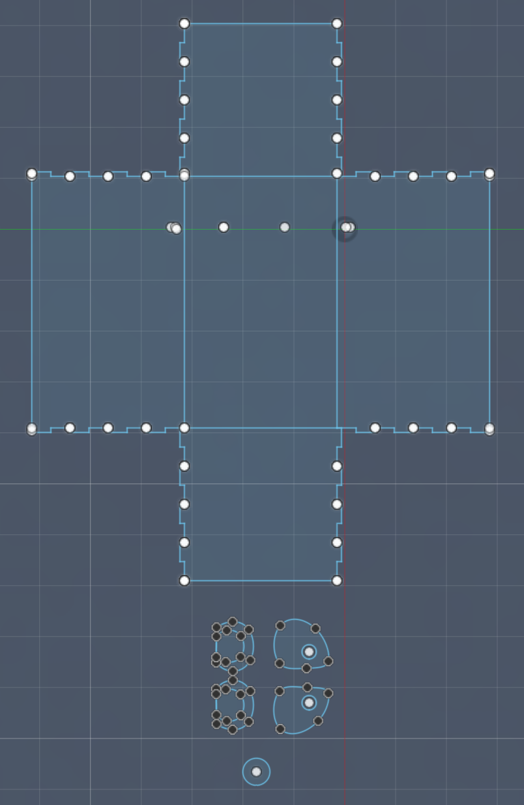
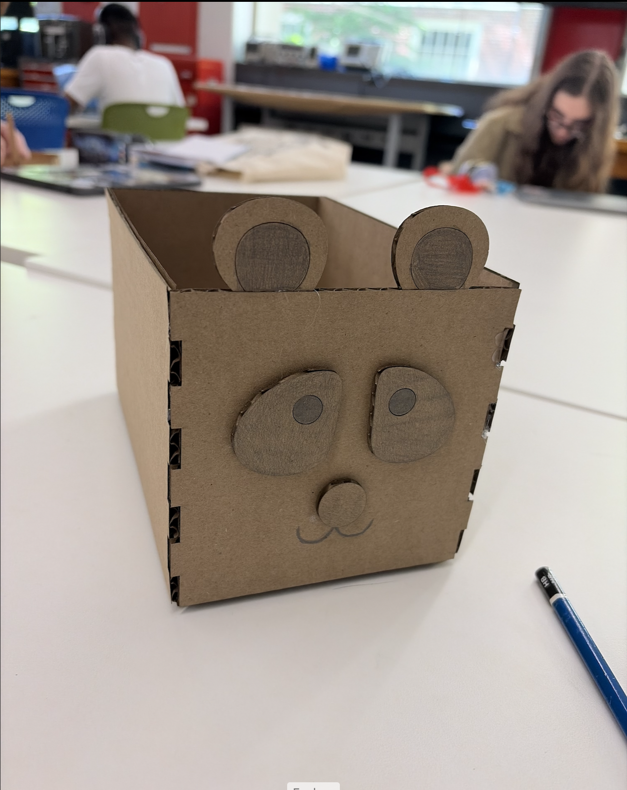
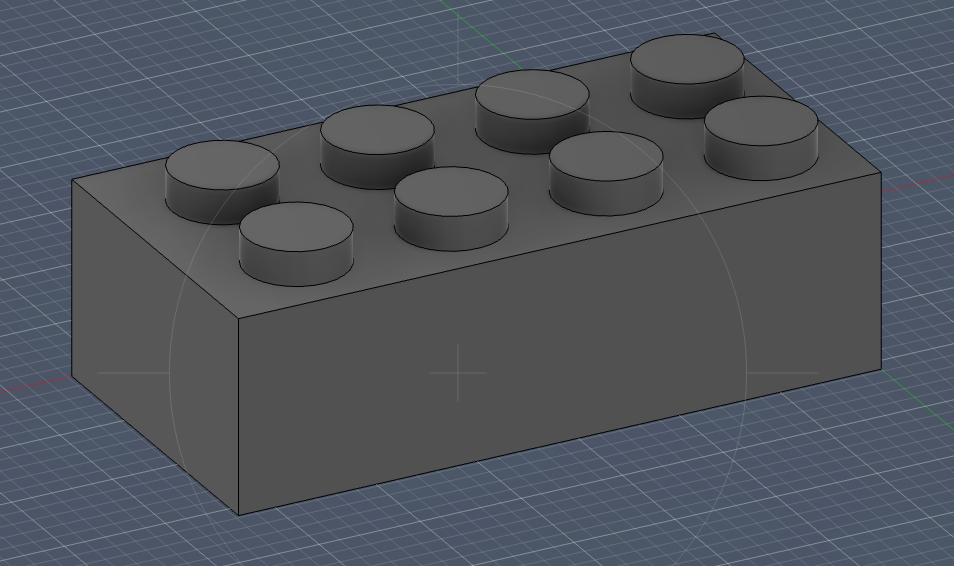
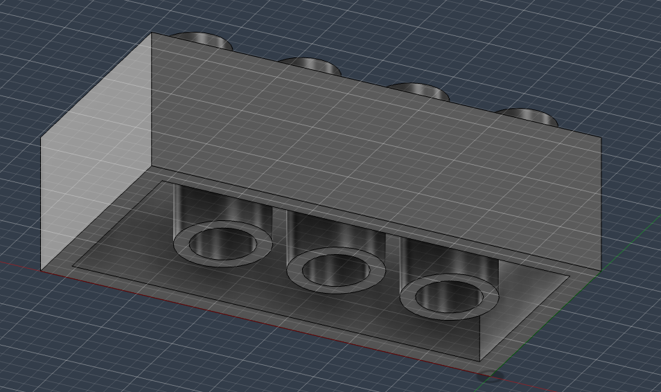
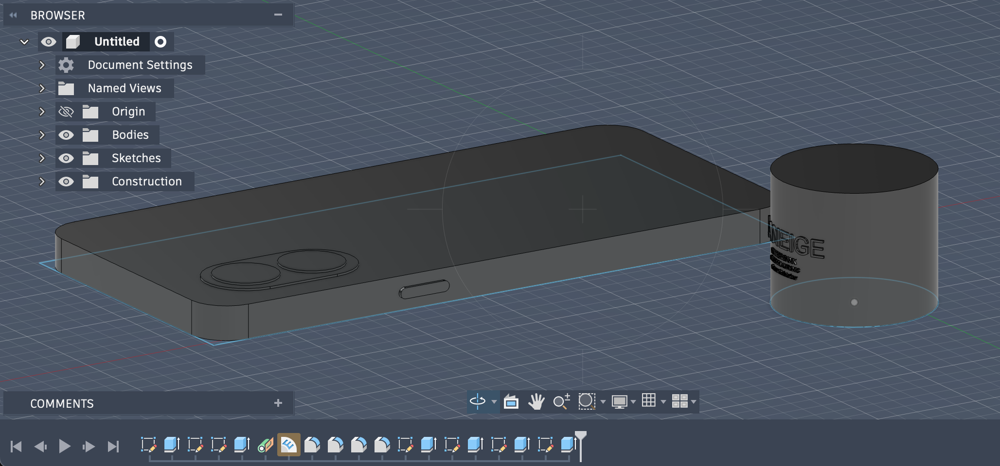

This is my box. I followed Nathan's tutorial on how to make the basic outline, then changed the parameters to adjust the size. Finally, I cut out ears, eyes, and a nose to make it look like a panda!
Following a fusion tutorial on YouTube, I modeled a Lego brick! I learned how to navigate between sketches, create 3D shapes, hollow out solids, and create repeating patterns.


After learning the basics of Fusion from the tutoial, I modeled two objects, my phone and my lip balm case. I measured them using calipers and then created them in Fusion
